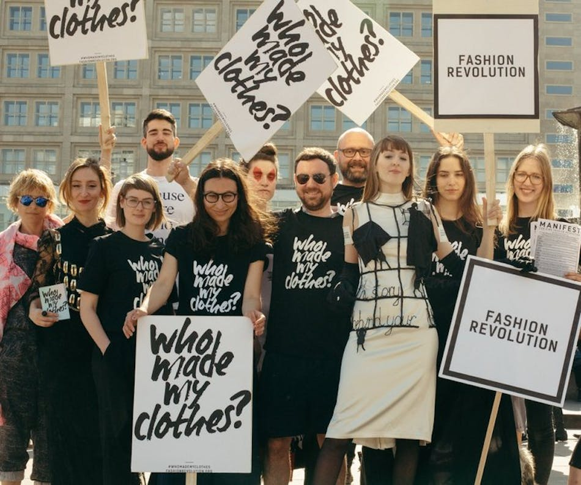
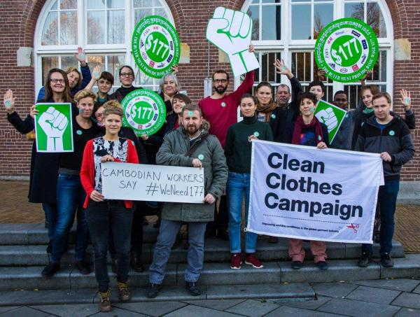
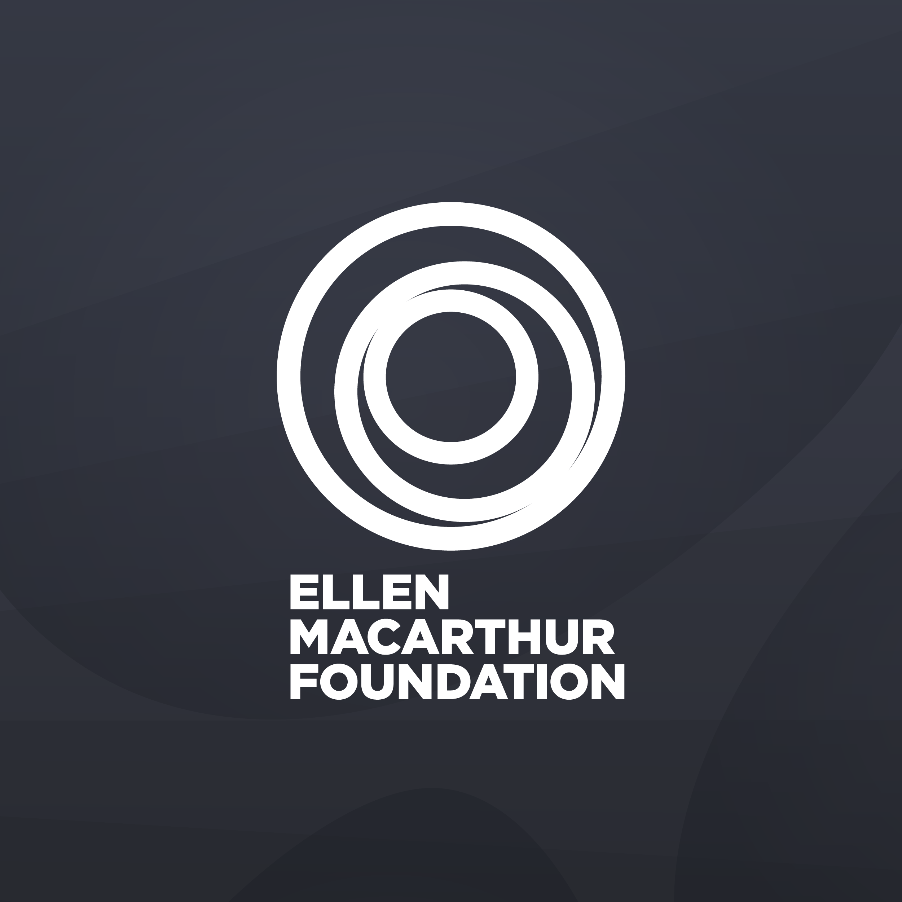
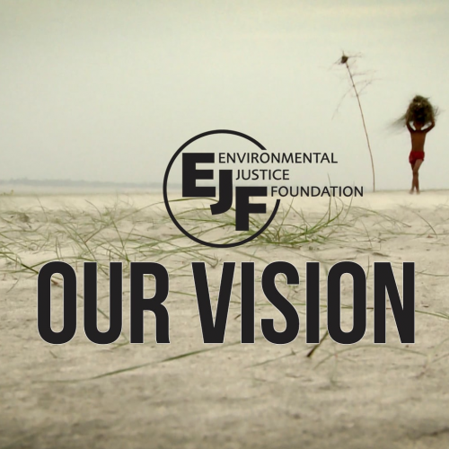
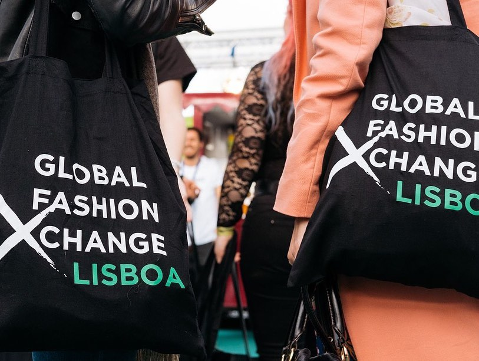
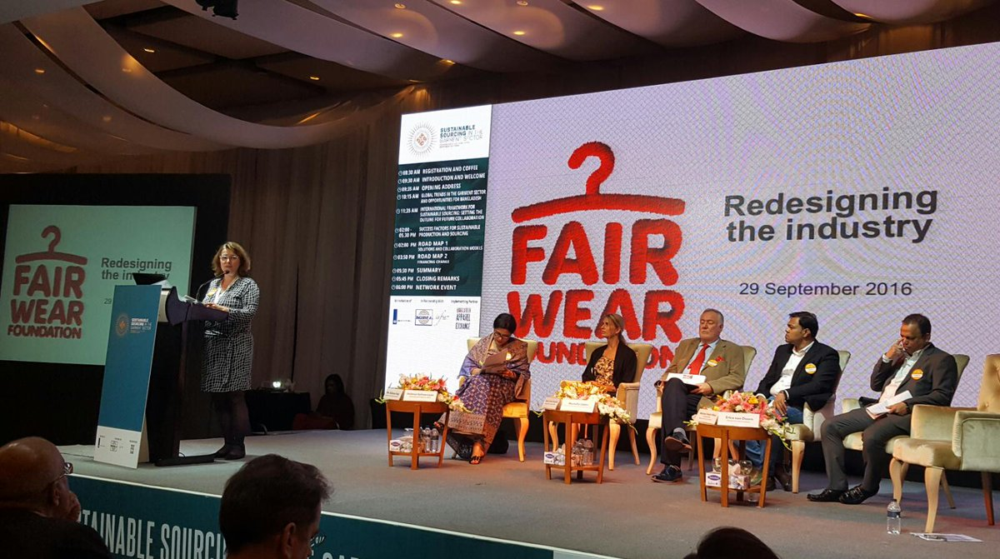

Home
Stats
Donate
About
Hover for description. Click to donate.

Fashion Revolution: A non-profit global movement based in the UK that has been campaigning for the past 10 years for a clean, safe, fair, and accountable fashion industry.

Clean Clothes Campaign: An alliance of labor unions and non-governmental organizations, committed to improving working conditions in the global garment and sportswear industries.

Ellen MacArthur Foundation: A foundation that promises to accelerate the transtion to a circular economy.
Fashion Takes Action: A non-profit organization established to advance sustainability in the fashion industry via education, awareness, research, and collaboration.
Fashion Act Now: An activist group demanding and enabling a radial defashion future.

Environmental Justice Foundation: A non-profit organization working to secure a world where the natural world can sustain and be sustained by the communuitites that depend upon it.

Global Fashion Exchange: An international platform promoting sustainability in the fashion industry.

Fair Wear Foundation: An independent organization coorperates with garment brands, workers, and industry influencers to improve labor conditions.